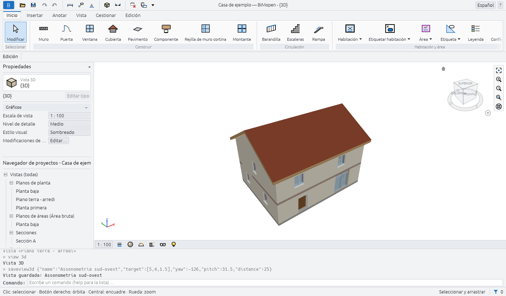
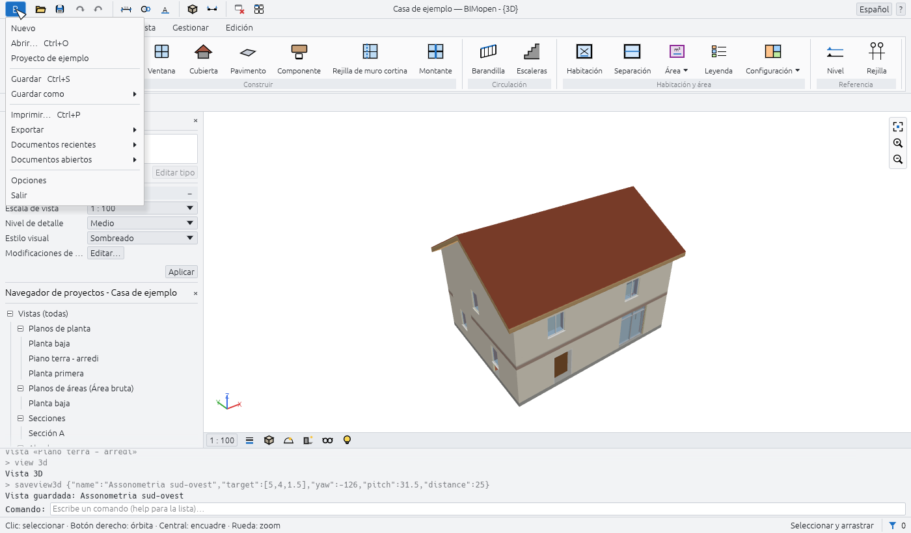
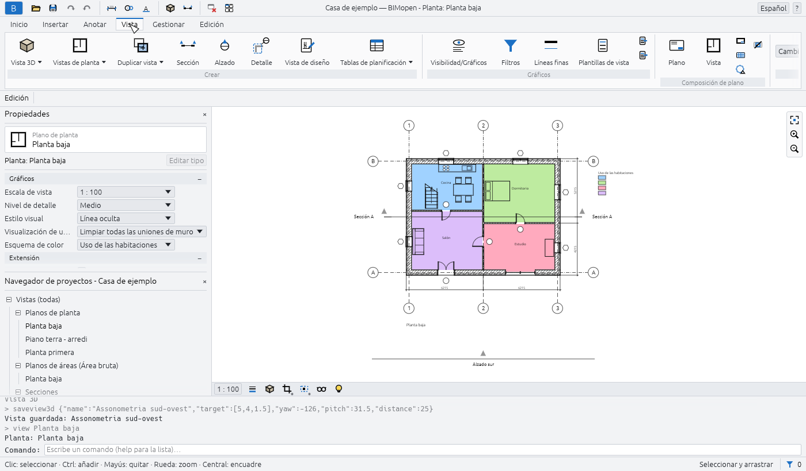
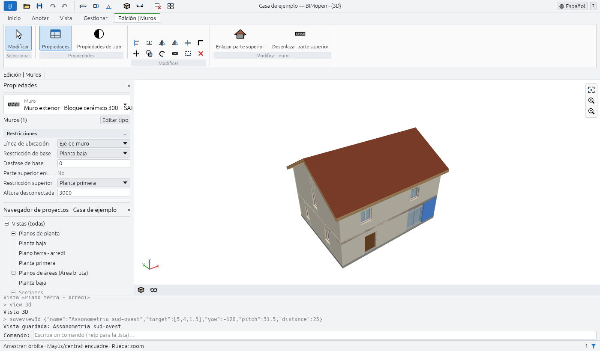
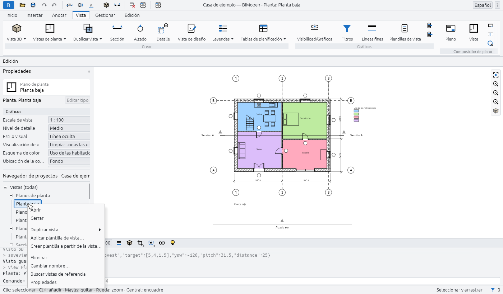
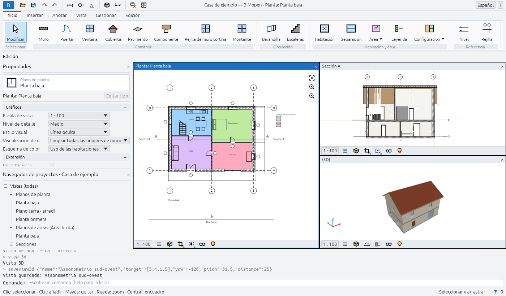
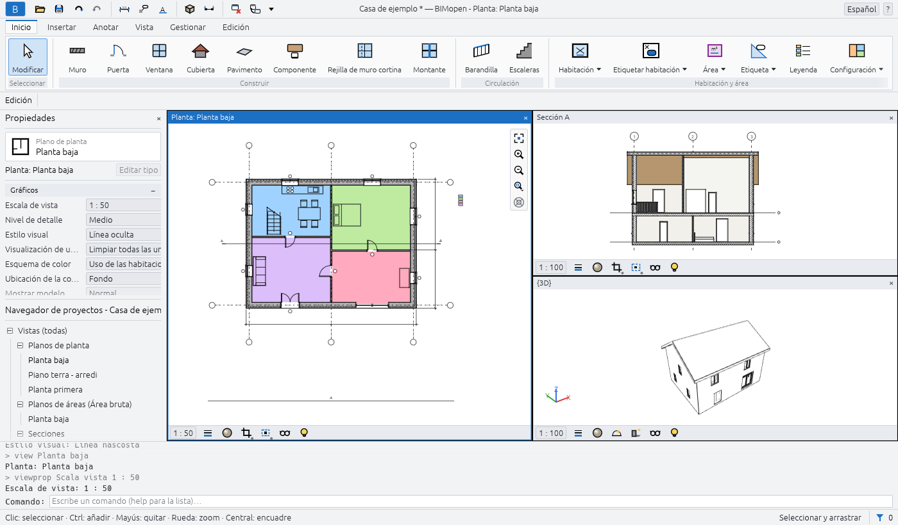

La interfaz
La ventana de BIMopen tiene las mismas partes en la versión de escritorio y en la web. De arriba abajo:
- la barra de título, con el menú de la aplicación, la barra de herramientas de acceso rápido, el nombre del proyecto y de la vista activa, el menú de idioma y el menú de ayuda;
- la cinta de opciones, con sus fichas y sus grupos de herramientas;
- la barra de opciones, con los parámetros de la herramienta activa;
- a la izquierda, la paleta Propiedades encima del Navegador de proyectos;
- el área de dibujo, donde las vistas se abren en ventanas, cada una con su barra de controles de vista;
- la línea de comandos, con el registro de lo que se ha hecho;
- la barra de estado.

En árabe toda la ventana se refleja: las paletas están a la derecha, la cinta de opciones y la barra de opciones se leen de derecha a izquierda, y la barra de navegación está en el borde izquierdo de las vistas.
Menú de la aplicación
El botón azul B en el extremo izquierdo de la barra de título abre el menú de la aplicación: los comandos que actúan sobre todo el proyecto.

| Elemento | Qué hace |
|---|---|
| Nuevo | Cierra el proyecto actual e inicia uno nuevo a partir de la plantilla por defecto: dos niveles con sus plantas y los tipos por defecto |
| Abrir… | Abre un proyecto .bimopen, o importa un modelo .rvt, elegido en un cuadro de diálogo de archivos. En el navegador, arrastra el archivo a la página |
| Proyecto de ejemplo | Abre la casa de ejemplo |
| Guardar Ctrl+S | Guarda el proyecto en su archivo; un proyecto nunca guardado pide un nombre, como Guardar como… |
| Guardar como… | Guarda el proyecto en un nuevo archivo .bimopen y sigue trabajando en ese archivo |
| Imprimir… Ctrl+P | Imprime planos en PDF |
| Exportar ▸ Exportar IFC4… | Escribe el modelo como archivo IFC4 |
| Exportar ▸ Exportar planta SVG… | Escribe la planta activa como dibujo SVG |
| Exportar ▸ Exportar vista PNG… | Escribe la vista activa como imagen PNG |
| Documentos abiertos | Enumera las ventanas de vista abiertas; haz clic en una para traerla al frente |
| Opciones | Abre el cuadro de diálogo Opciones |
| Salir | Cierra BIMopen (solo en el escritorio) |
Nuevo, Abrir… y Proyecto de ejemplo sustituyen el proyecto actual sin preguntar: guárdalo antes si quieres conservarlo.
Warning
Los cambios sin guardar se pierden al elegir Nuevo, Abrir… o Proyecto de ejemplo. El asterisco tras el nombre del proyecto en la barra de título te indica que hay cambios sin guardar.
Opciones
Menú de la aplicación ▸ Opciones tiene dos grupos:
| Parámetro | Valores | Efecto |
|---|---|---|
| Interfaz de usuario ▸ Idioma | Italiano, English, Deutsch, Français, Español, العربية | El idioma de toda la interfaz, al instante |
| Interfaz de usuario ▸ Tema | Claro, Oscuro | Los colores de la ventana. Oscuro también activa Invertir color de fondo |
| Gráficos ▸ Invertir color de fondo | activado, desactivado | Vistas con fondo oscuro y líneas claras |
BIMopen recuerda el idioma y el tema la próxima vez que se inicia.
Barra de herramientas de acceso rápido
Junto al menú de la aplicación, la barra de herramientas de acceso rápido mantiene los comandos más usados a un clic. Deja el ratón sobre un botón para leer qué hace y su atajo.
| Botón | Qué hace |
|---|---|
| Abrir… (carpeta) | Como en el menú de la aplicación |
| Guardar (disco) | Guarda, Ctrl+S |
| Deshacer (flecha a la izquierda) | Deshace el último cambio, Ctrl+Z. Atenuado cuando no hay nada que deshacer |
| Rehacer (flecha a la derecha) | Rehace el cambio que se acaba de deshacer, Ctrl+Y. Atenuado cuando no hay nada que rehacer |
| Cota alineada | Inicia la herramienta de cota alineada, DI |
| Etiquetar todo | Etiqueta las puertas y ventanas de la planta abierta que aún no tienen etiqueta, TG |
| Texto | Inicia la herramienta de texto, TX |
| Vista 3D (cubo) | Abre la vista 3D por defecto, {3D} |
| Sección | Inicia la herramienta de sección, SE |
| Cerrar ocultas | Cierra todas las ventanas de vista excepto la activa. Atenuado cuando solo hay una abierta |
| Cambiar ventanas | Enumera las ventanas de vista abiertas; la activa aparece marcada |
En el centro de la barra de título, cuando la ventana es lo bastante ancha, BIMopen muestra el nombre del proyecto y de la vista activa, por ejemplo Casa de ejemplo — BIMopen - Planta: Planta baja. Un asterisco tras el nombre del proyecto significa que tiene cambios sin guardar.
En el extremo derecho:
- el menú de idioma, un globo con el nombre del idioma actual: elige otro y la interfaz cambia al instante;
- el menú ?: Comandos enumera todos los comandos en la línea de comandos (como escribir
help), e Información muestra la versión, la licencia y los créditos.
? ▸ Ayuda (F1) abre este manual, en el idioma de la interfaz, en el navegador. F1 abre la página de lo que estás haciendo: el cuadro de diálogo abierto, el botón de la cinta de opciones bajo el ratón (su información termina con Pulse F1 para obtener más información) o la herramienta activa.
Cinta de opciones
La cinta de opciones agrupa las herramientas en fichas, y cada ficha en grupos. El nombre de un grupo está escrito bajo sus botones. Un botón cuyo nombre va seguido de una pequeña marca abre un menú. Al dejar el ratón sobre un botón se muestra qué hace y, entre paréntesis, el atajo que puedes escribir para iniciarlo.
| Ficha | Grupos |
|---|---|
| Inicio | Seleccionar, Construir, Circulación, Habitación y área, Referencia |
| Anotar | Seleccionar, Cota, Texto, Detalle, Etiqueta |
| Vista | Crear, Gráficos, Composición de plano, Ventanas |
| Gestionar | Configuración, Consulta |
| Edición | La ficha contextual: sus grupos dependen de la herramienta activa y de la selección |
La ficha Inicio
| Grupo | Botones |
|---|---|
| Seleccionar | Modificar: termina la herramienta activa y vuelve a la selección, Esc |
| Construir | Muro WA, Puerta DR, Ventana WN, Cubierta RF, Pavimento SB, Componente CM, Rejilla de muro cortina CG, Montante MU |
| Circulación | Barandilla RA, Escaleras ST |
| Habitación y área | Habitación RM, Separación RS, Área ▾ (Plano de áreas, Línea de contorno de área, Área), Leyenda LG, Configuración ▾ (Cálculos de área y volumen, Esquemas de color) |
| Referencia | Nivel: se dibuja en un alzado o una sección, dos clics a la altura del nuevo nivel (desde una planta abre un alzado); Rejilla GR |
Línea de contorno de área y Área funcionan en un plano de áreas: hasta que se abre uno están atenuados, y su información de herramienta indica que primero hay que abrir un plano de áreas.
La ficha Anotar
| Grupo | Botones |
|---|---|
| Seleccionar | Modificar |
| Cota | Alineada DI, Lineal DL, Angular DA |
| Texto | Texto TX |
| Detalle | Línea de detalle, Región rellenada, Región de máscara, Componente de detalle CD, Detalle repetido RD, Aislamiento IS |
| Etiqueta | Etiquetar todo TG |
La ficha Vista

| Grupo | Botones |
|---|---|
| Crear | Vista 3D ▾ (Vista 3D por defecto, Guardar vista), Vistas de planta ▾ (Plano de planta, Plano de áreas), Duplicar vista ▾ (Duplicar, Duplicar con detalles), Sección SE, Alzado EL, Detalle DT (una llamada), Vista de diseño VD, Tablas de planificación ▾ (Tabla de planificación/cantidades, Tablas de planificación predefinidas) |
| Gráficos | Visibilidad/Gráficos VG, Filtros, Plantillas de vista y dos botones pequeños: Aplicar plantilla a la vista actual, Crear plantilla a partir de la vista actual |
| Composición de plano | Plano: un plano nuevo con el cajetín que elijas; Vista: coloca una vista en el plano abierto |
| Ventanas | Cambiar ventanas, Replicar, Cascada, Mosaico, Maximizar, Cerrar ocultas, Interfaz de usuario |
Guardar vista solo funciona mientras hay una vista 3D abierta, Duplicar con detalles solo para vistas que no son 3D, y Composición de plano ▸ Vista solo mientras hay un plano abierto.
La ficha Gestionar
| Grupo | Botones |
|---|---|
| Configuración | Materiales, Información del proyecto, Estilos de objeto, Estilos de línea, Limpiar no utilizados, Unidades del proyecto UN, Forzado y Parámetros adicionales (Estilos de línea, Patrones de relleno) |
| Consulta | Comprobar: comprueba los huecos y las referencias del modelo e informa en la línea de comandos |
Forzado activa y desactiva el forzado de cursor para todo el programa: aparece resaltado mientras está activo.
La ficha contextual
Cuando inicias una herramienta o seleccionas algo, la cinta de opciones pasa por sí sola a la última ficha, que toma el nombre de lo que estás haciendo: Edición | Colocar: Muro mientras dibujas muros, Edición | Muros con muros seleccionados, Edición | Selección múltiple con elementos de categorías distintas. La ficha se distingue con su propio color. Cuando la herramienta termina, o se borra la selección, la cinta de opciones vuelve a la ficha que estabas usando.

Siempre tiene estos grupos:
| Grupo | Botones |
|---|---|
| Seleccionar | Modificar |
| Propiedades | Propiedades: muestra u oculta la paleta Propiedades; Propiedades de tipo: las propiedades del tipo de la selección, o del próximo elemento que colocará la herramienta |
| Modificar | Diecisiete herramientas pequeñas en tres filas: Alinear AL, Desfase OF, Simetría - Designar eje MM, Simetría - Dibujar eje DM, Dividir elemento SL, Dividir con separación SG; Mover MV, Copiar CO, Girar RO, Recortar/Alargar a esquina TR, Recortar/Alargar un elemento, Recortar/Alargar varios elementos; Matriz AR, Escala RE, Fijar PN, Liberar UP, Eliminar (Del) |
Eliminar solo funciona cuando hay algo seleccionado. El capítulo sobre selección y modificación describe las herramientas de Modificar.
Aparecen otros grupos según lo que esté seleccionado o según la herramienta:
| Cuándo | Grupo y botones |
|---|---|
| Algo seleccionado | Selección: Filtro (véase Selección y modificación) |
| Puertas o ventanas seleccionadas | Hueco: Voltear sentido, Voltear bisagra |
| Muros seleccionados | Modificar muro: Enlazar parte superior (los muros suben hasta la cubierta que tienen encima), Desenlazar parte superior |
| Un nivel seleccionado | Vista: Abrir planta |
| Secciones o alzados seleccionados | Sección: Dividir segmento (solo secciones), Voltear, Ir a vista |
| Una llamada seleccionada | Detalle: Ir a vista |
| Muros cortina seleccionados | Muro cortina: Rejilla de muro cortina, Montante, Panel |
| Herramienta Pavimento o Cubierta | Dibujar: Línea de contorno, Designar muros |
| Herramienta Escaleras o Barandilla | Modo: Finalizar modo de edición; Dibujar: Tramo o Líneas |
| Herramienta Montante | Colocación: Línea de rejilla, Segmento de línea de rejilla, Todas las líneas de rejilla |
| Una herramienta de detalle | Las formas de dibujo de la herramienta |
Barra de opciones
Bajo la cinta de opciones, la barra de opciones empieza con el nombre de la ficha contextual y luego muestra los parámetros de la herramienta activa. Se aplican a los próximos elementos que coloques. Al final, mientras hay una herramienta activa, muestra el nivel en el que estás trabajando: Nivel: Planta baja.
| Herramienta | Parámetros de la barra de opciones |
|---|---|
| Muro | Altura o Profundidad; el nivel al que llega el muro, o Sin conexión con su valor; Línea de ubicación; Cadena; Desfase; Radio (atenuado: los muros curvos aún no están disponibles); Exterior a la izquierda o Exterior a la derecha (la barra espaciadora los intercambia) |
| Cubierta | La forma: A dos aguas, A cuatro aguas o Plana; Pendiente, de 5° a 60°; Voladizo, hasta 2 m |
| Escaleras | Anchura, en milímetros; Tipo de barandilla, o Ninguno |
| Cotas | Lo que el cursor designa primero en un muro: Ejes de muro o Caras de muro |
| Detalle (llamada) | La escala de la nueva vista de detalle, o Referencia a otra vista y la vista de detalle o de diseño a la que apunta la llamada (siempre activada en una vista de diseño) |
| Línea de contorno de área | Línea o Seleccionar líneas; con Seleccionar líneas, Aplicar reglas de área o un Desfase |
| Herramientas que dibujan líneas | Orto (Mayús): solo segmentos horizontales y verticales; Forzado: forzado a extremos, puntos medios e intersecciones |
Con Orto (Mayús) desactivado, mantener pulsada Shift mientras dibujas da la misma restricción; con él activado, Shift la libera.
Propiedades
La paleta Propiedades muestra y modifica los parámetros de aquello en lo que estás trabajando. De arriba abajo tiene:
- el selector de tipo: la familia en letra pequeña y el tipo debajo. Haz clic en él para elegir otro tipo: los elementos seleccionados cambian de tipo o, mientras hay una herramienta activa, el próximo elemento recibe ese tipo;
- una fila con lo que muestra la paleta, por ejemplo Muros (1) o Nuevo: Muro, y el botón Editar tipo, que abre las propiedades de tipo;
- los parámetros, en grupos (Restricciones, Gráficos, Datos de identidad…). Haz clic en el nombre de un grupo para plegarlo. Los valores en gris son de solo lectura: se calculan a partir del modelo;
- el botón Aplicar, que confirma un valor que estás escribiendo. Enter hace lo mismo.
Lo que muestra la paleta depende de la situación:
| Situación | La paleta muestra |
|---|---|
| Nada seleccionado, ninguna herramienta | Las propiedades de la vista activa (escala, nivel de detalle, estilo visual…), o de la vista en la que se ha hecho clic en el Navegador de proyectos |
| Una herramienta activa | El tipo del próximo elemento, como Nuevo: Muro, Nuevo: Puerta… |
| Un elemento seleccionado | Su tipo y sus parámetros de ejemplar |
| Varios elementos de una categoría | Su número, como Muros (3) |
| Elementos de categorías distintas | Selección múltiple, Comunes (5) y cuántos hay de cada categoría, como 3 × Muros |
Las longitudes se escriben y se leen en las unidades del proyecto (milímetros en un proyecto
nuevo). Puedes escribir un valor con su unidad, por ejemplo 2.7m.
Para cerrar la paleta, haz clic en × en su título; para volver a mostrarla, usa Vista ▸ Ventanas ▸ Interfaz de usuario ▸ Propiedades o el botón Propiedades de la ficha contextual.
Navegador de proyectos
El Navegador de proyectos enumera las vistas, las tablas de planificación, los planos y las familias del proyecto en un árbol. Su título lleva el nombre del proyecto. Haz clic en ⊟ o ⊞ para plegar o desplegar una rama.

| Rama | Qué contiene |
|---|---|
| Vistas (todas) ▸ Planos de planta | Las plantas de todos los niveles, desde el más bajo, y las llamadas dibujadas en planta |
| Vistas (todas) ▸ Planos de áreas (…) | Los planos de áreas, una rama por esquema de áreas |
| Vistas (todas) ▸ Secciones, Alzados | Las secciones y los alzados |
| Vistas (todas) ▸ Vistas de detalle | Las llamadas dibujadas en secciones |
| Vistas (todas) ▸ Vistas 3D | {3D}, la vista 3D por defecto, y las vistas 3D guardadas |
| Vistas (todas) ▸ Vistas de diseño | Las vistas de diseño |
| Tablas de planificación/Cantidades | Las tablas de planificación del proyecto y luego las predefinidas |
| Planos (todos) | Los planos, como número - nombre |
| Familias | Los tipos del proyecto, por categoría: muros, puertas, ventanas, suelos, cubiertas, componentes y los demás |
Las ramas de planos de áreas, secciones, alzados, vistas de detalle y vistas de diseño solo aparecen cuando contienen algo. La vista activa está escrita en negrita.
Con una vista:
- un clic muestra sus propiedades en la paleta Propiedades, sin abrirla;
- un doble clic la abre;
- un clic con el botón derecho abre su menú: Abrir, Cerrar (cierra sus ventanas), Duplicar vista ▸ (Duplicar, Duplicar con detalles), Aplicar plantilla de vista…, Crear plantilla a partir de la vista…, Eliminar, Cambiar nombre…, Propiedades.
El menú de un plano tiene Aplicar plantilla de vista a todas las vistas… en lugar de los dos elementos de plantilla, y no tiene Duplicar vista. {3D} no se puede eliminar ni cambiar de nombre.
Con una tabla de planificación del proyecto, un clic la selecciona, un doble clic la abre, y el menú del botón derecho tiene Abrir, Propiedades de tabla… y Eliminar. Una tabla de planificación predefinida se abre con un clic.
Con un tipo, bajo Familias, un doble clic abre sus propiedades de tipo; el menú del botón derecho tiene Propiedades de tipo, Duplicar…, Crear ejemplar (inicia la herramienta que lo coloca, con ese tipo) y Eliminar.
Área de dibujo y ventanas de vista
Cada vista que abres es una ventana en el área de dibujo. Una vista que se vuelve a abrir pasa al frente; siempre queda abierta al menos una ventana. Vista ▸ Ventanas las organiza:
| Botón | Qué hace |
|---|---|
| Cambiar ventanas | Enumera las ventanas abiertas; la activa aparece marcada |
| Replicar | Abre una segunda ventana de la vista activa, con su propio zoom |
| Cascada | Ventanas superpuestas, cada una con su barra de título: arrastra un título para mover una ventana y sus bordes para cambiar su tamaño |
| Mosaico | Todas las ventanas una junto a otra, cada una con una barra de título; la activa tiene el título y el marco azules |
| Maximizar | La ventana activa ocupa toda el área de dibujo; las demás esperan debajo |
| Cerrar ocultas | Cierra todas las ventanas excepto la activa |
| Interfaz de usuario | Muestra u oculta el Navegador de proyectos, Propiedades, la Línea de comandos, la Barra de estado y la Barra de navegación |

Haz clic en una ventana para activarla: las herramientas trabajan en la ventana activa, las demás solo muestran el modelo. En Mosaico y Cascada, la × de la barra de título de una ventana la cierra.
Barra de controles de vista
En la parte inferior de cada planta, sección, alzado, llamada y vista de diseño:
| Control | Qué hace |
|---|---|
| La escala, por ejemplo 1 : 100 | Abre la lista de escalas; en Personalizada escribe otra, como 1 : 75, y pulsa Enter |
| Nivel de detalle | Bajo, Medio o Alto |
| Recortar vista | Recorta la vista a su región de recorte, o deja de recortarla; un punto azul indica que está activo |
| Mostrar región de recorte | Muestra u oculta el marco de la región de recorte; un punto azul indica que está activo |
| Ocultar/Aislar temporalmente | Oculta o aísla elementos o categorías en esta vista hasta que lo restableces; aparece enmarcado mientras está activo |
En una vista 3D, la barra tiene el Estilo visual (Estructura alámbrica, Línea oculta, Sombreado, Sombreado con aristas, Colores coherentes) y Ocultar/Aislar temporalmente. Un plano no tiene barra de controles de vista: sus vistas tienen su propia escala.

Barra de navegación
En el borde derecho de la vista activa (el borde izquierdo en árabe), tres botones: Zoom en región ajustada (lo mismo que Home), Ampliar y Reducir.
Desplazarse por las vistas
| En plantas, secciones, alzados y planos | |
|---|---|
| Rueda del ratón | Amplía y reduce en el cursor |
| Arrastrar con el botón central | Encuadra |
| Arrastrar con el botón izquierdo | Una ventana de selección, o mueve los elementos seleccionados (Selección y modificación) |
| Home | Ajusta toda la vista a la ventana |
| En vistas 3D | |
|---|---|
| Arrastrar con el botón derecho, o Shift + botón central | Orbita alrededor del modelo |
| Arrastrar con el botón central | Encuadra |
| Arrastrar con el botón izquierdo | Una ventana de selección, o mueve los elementos seleccionados |
| Rueda del ratón | Amplía y reduce |
| Home | Ajusta todo el modelo a la ventana |
Un pequeño trípode en la esquina inferior de la vista 3D muestra las direcciones de los ejes: X rojo, Y verde, Z azul. Una vista 3D guardada recuerda dónde la dejaste.
El menú contextual de una vista
Haz clic con el botón derecho en una vista mientras no hay ninguna herramienta activa. Si el cursor está sobre un elemento que no está seleccionado, primero se selecciona el elemento. El menú tiene:
- Cancelar: borra la selección;
- Seleccionar todos los ejemplares ▸ Visibles en la vista o ▸ En todo el proyecto: los elementos del mismo tipo; Seleccionar anterior: la selección hecha antes;
- Ocultar en vista ▸ Elementos o ▸ Categoría: oculta los elementos seleccionados, o sus categorías completas, en esta vista;
- Modificar gráficos en vista ▸ Por categoría…: abre Visibilidad/Gráficos con las categorías de la selección;
- Visibilidad/Gráficos….
Mientras hay una herramienta activa, un clic con el botón derecho hace lo mismo que Esc: cancela el paso en curso.
Línea de comandos
Bajo el área de dibujo, la línea de comandos muestra el registro de lo que se ha hecho, lo más
reciente abajo: los comandos ejecutados, en gris tras un >, sus resultados, y los errores en
rojo. En su última fila, el indicador dice lo que espera la herramienta activa, por ejemplo
WALL next point [Esc to
finish]:, o Command: cuando no hay ninguna herramienta activa.
No hace falta hacer clic en ella: todo lo que escribes mientras no se está editando ningún campo va a la línea de comandos. Enter ejecuta la línea; Up y Down recuperan las líneas escritas antes. El capítulo sobre la línea de comandos describe los comandos.
Barra de estado
A la izquierda, la barra de estado muestra:
- mientras hay una herramienta activa, lo que espera la herramienta (el mismo indicador que la línea de comandos);
- sin herramienta, la categoría y el tipo del elemento bajo el cursor, como Muros : Muro exterior - Bloque cerámico 300 + SATE;
- mientras arrastra, la longitud del desplazamiento, como Mover: 1500;
- en los demás casos, un recordatorio del ratón: Clic: seleccionar · Ctrl: añadir · Mayús: quitar · Rueda: zoom · Central: encuadre en plantas, Clic: seleccionar · Botón derecho: órbita · Central: encuadre · Rueda: zoom en 3D.
A la derecha, el número de elementos seleccionados y un embudo: haga clic en el número para abrir Filtro. Luego Seleccionar y arrastrar, que permite arrastrar elementos sin seleccionarlos antes; en una planta, también las coordenadas del cursor en metros.
La selección, en resumen
El capítulo sobre selección y modificación describe la selección en detalle. Lo esencial:
- haz clic en un elemento para seleccionarlo; haz clic en un punto vacío para borrar la selección;
- Ctrl + clic añade un elemento a la selección, Shift + clic lo quita; Tab resalta el elemento siguiente bajo el cursor, o una cadena de muros unidos;
- arrastra de izquierda a derecha para seleccionar lo que está por completo dentro del rectángulo, y de derecha a izquierda para seleccionar lo que toca;
- arrastra un elemento seleccionado para moverlo;
- Ctrl+A selecciona los elementos del nivel de la planta abierta, o de todo el modelo en una vista 3D; Del elimina la selección; Esc la borra.